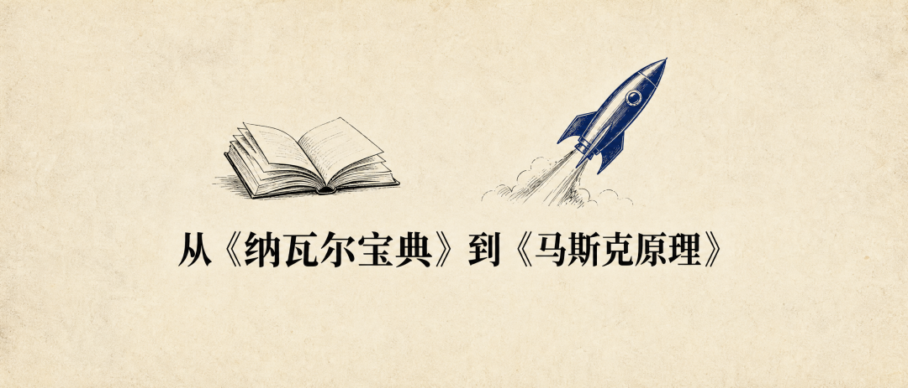

💡 从《纳瓦尔宝典》到《马斯克原理》
From Naval Ravikant to Elon Musk Life Principles

周末读了两本书，两个人的思想thought[θɔːt] n. 思想，读完发现两本书的作者竟然是同一个。
一本是《纳瓦尔宝典》，讲的是一个人如何积累accumulate[əˈkjuːmjʊleɪt] v. 积累财富和自由。
一本是《马斯克原理》，讲的是如何推动人类文明civilization[ˌsɪvəlaɪˈzeɪʃən] n. 文明进步。
两本书作者author[ˈɔːθə] n. 作者都是 Eric Jorgenson。他做的事情很特别：不写传记，不做采访，而是从一个人海量的公开发言里提炼出思维框架framework[ˈfreɪmwɜːk] n. 框架，编排成一本可操作的手册。
他用这个方法做了《纳瓦尔宝典》，全球global[ˈɡləʊbəl] adj. 全球卖了上百万册。然后花了五年，从马斯克过去二十年的三百万字访谈interview[ˈɪntəvjuː] n. 访谈、推文和演讲里，编排出了《马斯克原理》。
两本书合在一起，分别对应人生的第一阶段phase[feɪz] n. 阶段和第二阶段的两种活法，这两个阶段分别是财富自由之前和财富自由之后。
第一本书很早之前看过，今天意外复习review[rɪˈvjuː] v. 复习（结尾会讲这个意外），第二本书我只看了一小半，已热血沸腾。
摘录一些让我印象最深的片段segment[ˈseɡmənt] n. 片段：
赚钱的本质essence[ˈesəns] n. 本质就四个字：创造，销售。
纳瓦尔把通过自己的劳动所获得的收入可以拆解为三个因素factor[ˈfæktə] n. 因素：专长、责任、杠杆。
专长expertise[ˌekspɜːˈtiːz] n. 专长，拆解为天分和热爱。天分是天生的，我们没办法，热爱可以靠一万小时和百分百的专注concentration[ˌkɒnsənˈtreɪʃən] n. 专注；专注度度去堆，人要主动选择自己热爱的事情去做。
责任responsibility[rɪˌspɒnsəˈbɪlɪti] n. 责任，勇于承担责任才能建立可信度，才能与人深度合作，才能获得更多收益。
杠杆，人类学会了相互信任和合作cooperation[kəʊˌɒpəˈreɪʃən] n. 合作，从而进入了杠杆时代。杠杆有三种：劳动力杠杆、资本capital[ˈkæpɪtəl] n. 资本杠杆、软件和媒体。
杠杆的另一面，是判断力judgment[ˈdʒʌdʒmənt] n. 判断力的重要性，因为每一个决策质量的提升，都会被快速放大。提升判断力，有两个实用的方法，一个是真实实践practice[ˈpræktɪs] n. 实践，一个是读书/学习。
剩下的交给时间和运气fortune[ˈfɔːtʃuːn] n. 运气。
时间，选择selection[sɪˈlekʃən] n. 选择你不喜欢的事情和你热爱的事情，所花的时间是一样的，选择小事情和选择大事情，所花的时间也是一样的。
面对公平的时间，你最好的策略strategy[ˈstrætədʒi] n. 策略是找到你的所爱，找到努力的意义，然后不计结果地投入其中就好了。偶尔抬头，可能繁花似锦blossom[ˈblɒsəm] n. 繁花似锦；繁荣。
运气，是多做尝试attempt[əˈtempt] n. 尝试，是多研究多发现。或者成为一个领域domain[dəˈmeɪn] n. 领域最独特的存在，让运气找到你。
纳瓦尔说，最好的工作，就是终身学习者在自由市场中的创造性creativity[ˌkriːeɪˈtɪvɪti] n. 创造性表达。
这就是纳瓦尔宝典里最核心core[kɔː] n. 核心的东西了。
第一性原理的反面就是类比analogy[əˈnælədʒi] n. 类比思维。
马斯克说，在日常事务中应该使用类比推理reasoning[ˈriːzənɪŋ] n. 推理，否则大脑会因为第一性原理思考而不堪重负。
但在做重大抉择时，类比推理无法摆脱传统和以往经验experience[ɪkˈspɪəriəns] n. 经验的枷锁，这种思考方式实属荒唐。
切记不要盲目跟风，运用物理学思维mindset[ˈmaɪndset] n. 思维；心态，从第一性原理出发进行思考，就可以避免犯错，这种方法极为强大，适用于生活的方方面面。
类比思维：以前的火箭rocket[ˈrɒkɪt] n. 火箭都很贵，以后也会很贵。第一性原理：从原料看，火箭的材料成本cost[kɒst] n. 成本只有 1%-2%，只要利用工程的魔法，完全可以把火箭做得很便宜。
用类比思维理解comprehend[ˌkɒmprɪˈhend] v. 理解世界，用第一性原理改变世界。
最后这句话是 Cola 说的金句，很准确accurate[ˈækjʊrət] adj. 准确。
马斯克 80% 的时间花在工程学engineering[ˌendʒɪˈnɪərɪŋ] n. 工程学上。
工程师engineer[ˌendʒɪˈnɪə] n. 工程师和物理学家谁更厉害？他觉得工程学更胜一筹。没有工程学，就无法获得任何新数据，物理学研究也就会遇到瓶颈bottleneck[ˈbɒtəlnɛk] n. 瓶颈。（训练training[ˈtreɪnɪŋ] n. 训练大模型也可以看作一个数据工程）
物理学的目标是探索宇宙universe[ˈjuːnɪvɜːs] n. 宇宙中已有的事物，发现最基本的真相，但真相已经在那里了。
工程学的目标objective[əbˈdʒektɪv] n. 目标则是创造此前从未存在过的事物。
本质上，工程学就是魔法magic[ˈmædʒɪk] n. 魔法，谁不想成为魔法师呢？
马斯克喜欢《孙子兵法warfare[ˈwɔːfeə] n. 兵法；战争》，看过很多遍。
他说这本书里应该增加一章：如果你拥有决定性的技术优势advantage[ədˈvɑːntɪdʒ] n. 优势，就能以最小的伤亡赢得胜利。
古罗马人就是靠冶金和修路赢得战争war[wɔː] n. 战争。
历史上大多数时期技术发展缓慢，战争拼的是运筹scheme[skiːm] n. 运筹；谋划和战略。但当技术出现断层式突破breakthrough[ˈbreɪkθruː] n. 突破时，整个局势就会根本性改变。
现在拼的是谁创造新技术的速度speed[spiːd] n. 速度更快。
他的脑子里像猛烈的暴风雨storm[stɔːm] n. 暴风雨，想法像雨点一样砸下来，多到来不及实现。
新颖的创意从来不是问题，执行execute[ˈeksɪkjuːt] v. 执行才是关键。
创意本身没有多少价值value[ˈvæljuː] n. 价值。做出原型还不够，真正的挑战challenge[ˈtʃæləndʒ] n. 挑战在于实现量产，还要保证现金流为正。
想去火星Mars[mɑːz] n. 火星这个主意并不难。
真正困难difficulty[ˈdɪfɪkəlti] n. 困难的是如何登上火星。
面试时他喜欢让候选人candidate[ˈkændɪdət] n. 候选人讲述他们遇到过的棘手问题，以及如何应对。
真正闯过难关的人，对问题的每个细节detail[ˈdiːteɪl] n. 细节了如指掌，问得再细都能真诚回答。没有亲自解决过问题的人只能含糊vague[veɪɡ] adj. 含糊其辞。
过于看重才能talent[ˈtælənt] n. 才能、忽视人品，是他犯过的错误。了解品性的方法：观察observe[əbˈzɜːv] v. 观察他交什么样的朋友、和什么样的人共事。人可以伪装disguise[dɪsˈɡaɪz] v. 伪装品性，但他的朋友不会。
技能skill[skɪl] n. 技能一教就会，而人的本性难以改变。
管理者manager[ˈmænɪdʒə] n. 管理者就应该到一线去。取消所有特权privilege[ˈprɪvɪlɪdʒ] n. 特权，即便是 CEO 都没有自己的办公室。管理的职责是服务团队team[tiːm] n. 团队，不是让团队伺候自己。
给别人反馈feedback[ˈfiːdbæk] n. 反馈时不留情面，但聚焦于事情本身。只批评行为behavior[bɪˈheɪvjə] n. 行为，不针对个人。
想讨别人喜欢是一个弱点weakness[ˈwiːknɪs] n. 弱点，一个致命的弱点，而他没有这个弱点。
公司只是一个虚构的概念concept[ˈkɒnsept] n. 概念，本质上是一群人共赴前程。这群人能力capability[ˌkeɪpəˈbɪlɪti] n. 能力有多强、工作多拼命、能否心往一处使，将决定成败。
从根本上限制restrict[rɪˈstrɪkt] v. 限制公司发展的就是顶尖工程师。一家公司有强烈的使命mission[ˈmɪʃən] n. 使命感，就能吸引全世界最顶尖的人才。
做有趣的工作，拿丰厚的报酬compensation[ˌkɒmpənˈseɪʃən] n. 报酬，做的产品能改变世界。没有比这更激动thrilling[ˈθrɪlɪŋ] adj. 激动人心人心的事了。
要做出正确的决策decision[dɪˈsɪʒən] n. 决策，你就要充分了解产品的细节。
极致的产品会把创造和销售合成combine[kəmˈbaɪn] v. 合成；结合一件事。
产品做到极致，就不需要传统营销marketing[ˈmɑːkɪtɪŋ] n. 营销。
只有拼命解决棘手tricky[ˈtrɪki] adj. 棘手的问题，才能做出极致的产品。
解决难题puzzle[ˈpʌzəl] n. 难题就是公司的价值所在。
最后，再讲讲为什么会意外复习到《纳瓦尔爆点》，其实是因为最近买了一本孟岩的书《投资investment[ɪnˈvestmənt] n. 投资中我相信的事》。
虽然投资并非我的关注点，但以我对孟岩的了解，这本书大概率probability[ˌprɒbəˈbɪlɪti] n. 概率会大量「夹带私货」。
正如我所料，我喜欢这本书里所有夹带私货的部分，比如他梳理organize[ˈɔːɡənaɪz] v. 梳理；整理了《纳瓦尔宝典》里的内容，也就是本文的第一部分。
比如投资里最重要important[ɪmˈpɔːtənt] adj. 重要的事情，到底是什么。
股东大会上，有人问巴菲特：如果仅选择一只股票stock[stɒk] n. 股票来对抗高通胀，你会选择什么？为什么？
巴菲特说：最好的一项投资就是投资自己，做自己擅长excel[ɪkˈsel] v. 擅长的事情，成为对社会有用的人，人们会给你一些他们生产的东西来换取你能提供的东西。这样就不用担心钱因高通胀而贬值depreciate[dɪˈpriːʃieɪt] v. 贬值了。
以上三本书，我都很喜欢，推荐recommend[ˌrekəˈmend] v. 推荐给所有正在创造的人。